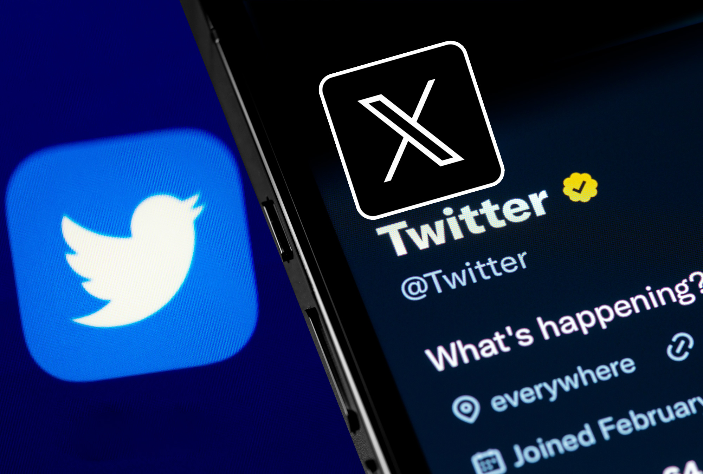

Mi X
¿Porqué Twitter ahora es X?
La decisión fue tomada por Elon Musk, quien adquirió Twitter por una asombrosa suma
de 44 mil millones de dólares el año pasado, y que comenzó a implementar este cambio
a partir de abril de 2023. Ahora, Twitter tiene la mira puesta en una diversificación de
sus servicios que incluirá marketplaces, contenido de audio y video, opciones de pago,
y una amplia variedad de contenido multimedia, entre otras cosas.

Continuara.....
Regresar al menu